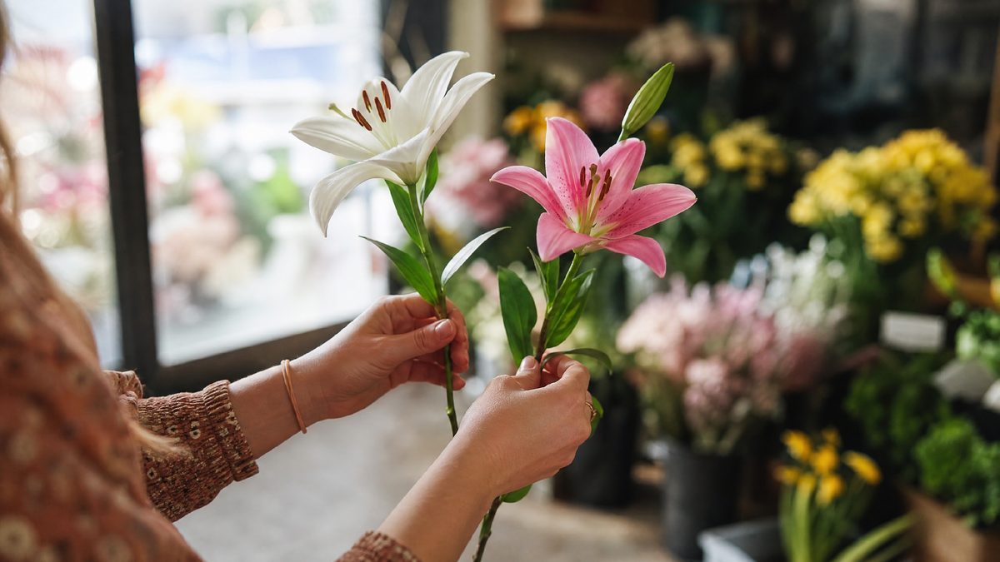

Лилию дарят реже, чем розы и тюльпаны. И не потому, что она некрасивая — а потому что мало кто понимает, что она означает. А символика у лилии сложная: один и тот же цветок в разных ситуациях читается как признание в любви, как просьба о прощении и как знак траура.
Разберёмся, что на самом деле говорит лилия, кому её можно дарить и почему в некоторых случаях лучше выбрать что-то другое.
Откуда пришла лилия
Лилия — один из самых древних цветов в культуре. Её изображения встречаются ещё в Древнем Египте, за несколько тысяч лет до нашей эры. И почти сразу она стала не просто цветком, а знаком.
В Древней Греции лилия была связана с богиней Герой — женой Зевса. Считалось, что она выросла из капель молока Геры. Отсюда значение: чистота, материнство, брак.
В Древнем Риме лилия стала символом надежды и обновления. Её изображали на монетах, на зданиях, в храмах. Это был знак того, что жизнь продолжается.
В христианстве лилия стала цветком Богоматери. Она означала чистоту, невинность, смирение. Архангел Гавриил на иконах часто держит лилию — знак благой вести.
Во Франции лилия стала королевским символом. Знаменитая «геральдическая лилия» — флёр-де-лис — украшала гербы французских королей. Она означала власть, благородство, верность короне.
Что это значит для нас? Лилия — цветок с очень богатой историей. Дарить её — значит прикасаться к этой истории. И важно, чтобы вы понимали, к какой именно.
Что означает лилия в подарке
Символика лилии зависит от цвета. И здесь есть важный момент, о котором многие не знают.
Белая лилия — самый противоречивый вариант. В западной традиции это чистота, невинность, начало. Но в России белая лилия давно стала траурным цветком. Её приносят на похороны, сажают на могилах, дарят в знак скорби. Поэтому белую лилию не дарят на радостные события — она читается как намёк на смерть.
Красная лилия — страсть и любовь. Работает похоже на красную розу, но мягче. Подходит для признания в чувствах, особенно если вы хотите сказать что-то серьёзное.
Розовая лилия — нежность, симпатия, забота. Универсальный вариант. Хорошо дарить девушке на свидании, маме, сестре.
Оранжевая лилия — энергия, радость, успех. Хороша для подарка коллеге, другу, на повышение.
Жёлтая лилия — благодарность, дружба, хорошее настроение. В отличие от жёлтой розы, жёлтая лилия не читается как разлука.
Фиолетовая лилия — восхищение, уважение. Хороша для старшего поколения или для коллеги, к которому вы испытываете уважение.

Приметы, связанные с лилией
Лилия окружена приметами больше, чем многие другие цветы. И вот что важно знать, прежде чем её дарить.
Белая лилия в доме. Есть примета: белые лилии в доме — к неприятностям. Особенно если их подарили. Считается, что они «притягивают» плохие новости. Это связано с их траурной символикой.
Лилия в подарок незамужней девушке. Некоторые приметы говорят: белая лилия может помешать выйти замуж. Не потому что «портит судьбу», а потому что читается как «тебе не нужен брак». Работает, если девушка верит.
Лилия для беременной. Есть примета, что лилию нельзя дарить беременной — «может навредить ребёнку». Это суеверие без оснований, но если будущая мама верит — уважьте.
Лилия и зеркало. В старых поверьях лилия и зеркало вместе «открывают дверь» в другой мир. Если дарите лилию, не добавляйте к ней зеркало в подарок.
Хорошая примета: красная или розовая лилия в подарок девушке — к счастливой любви. Считается, что она «притягивает» взаимность.
Кому дарить лилию и когда
Маме или бабушке — на день рождения, на 8 марта. Лучше выбрать розовую или кремовую, не белую. Особенно хороша лилия в сочетании с другими цветами.
Девушке или жене — на свидание, на годовщину. Красная, розовая, оранжевая. Одну лилию часто дарят как сильный знак внимания.
Коллеге или начальнику — на повышение, на юбилей. Оранжевая, фиолетовая. Спокойные тона, без белых.
Подруге — на день рождения. Розовая, жёлтая. Как знак дружбы, без романтики.
Учителю или врачу — в знак уважения. Фиолетовая, кремовая. Белую не дарите — можно попасть в неловкую ситуацию.
На свадьбу — красная или розовая лилия в букете невесты. Очень популярный вариант, особенно с добавлением роз.
На похороны — белая лилия. Здесь она уместна. Это единственный случай, когда белая лилия — правильный выбор.
Что не стоит делать
Не дарите белую лилию в радостный день. Даже если очень красиво. Даже если она дороже всех остальных. В России это читается как траур.
Не дарите лилию в горшке. Считается, что цветок в горшке «привязывает» к дому. Лилию лучше дарить срезанной, в букете.
Не дарите чётное число. Как и с любыми цветами, чётное число в России — только на кладбище. Для живых — нечётное.
Не сочетайте лилию с зеркалом. Это старая примета, но она живая. Лучше не смешивать.
Не дарите, если не знаете отношения человека. Кто-то любит лилии, кто-то боится. Уточните у близких или выберите нейтральный вариант.
Что сказать, когда вручаете
Лилия требует слов. Без объяснения она может быть прочитана не так, как вы хотели.
«Эта лилия — про нежность. Она розовая, потому что ты у меня нежная».
«Красная лилия — я до сих пор влюблён».
«Жёлтая — просто чтобы ты улыбнулась».
«Фиолетовая — это моё восхищение тобой».
«Белая — только если это день памяти. В других случаях не дарю».
Одна фраза — и лилия перестаёт быть «просто цветком». Она становится посланием.
Вместо итога
Лилия — цветок с двойной судьбой. В одной руке она символ любви, нежности, восхищения. В другой — знак траура и прощания. Один и тот же цветок, но разные контексты читаются как противоположные.
Но это не значит, что лилию нельзя дарить. Это значит, что дарить её нужно понимая. Зная, кому, когда, какого цвета и с какими словами.
Лилия — не цветок для «просто подарка». Она — для особого случая. Для того момента, когда вы хотите сказать что-то важное.
И если вы выбрали лилию правильно — она скажет за вас то, что вы не решитесь произнести. Может быть, признание. Может, благодарность. А может — нежность, которую вы давно копили и не находили слов.
Моя знакомая однажды получила от мужа букет — три красные лилии, без роз, без зелени, без упаковки. Он сказал просто: «Ты знаешь, что это значит». Она знала.